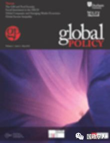
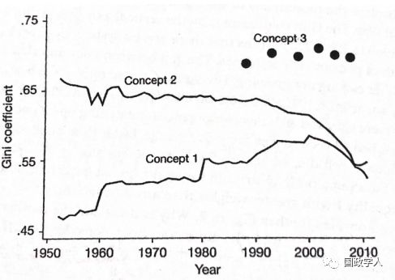
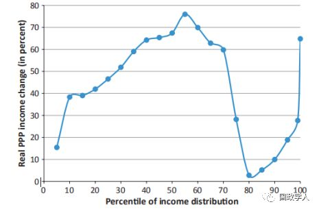

收录于合集

简 介
** 【作者】** Branko Milanovic，塞尔维亚裔美国经济学家，主要研究方向为收入分配和不平等，曾任世界银行研究部门的首席经济学家。
** **【 编译 】****施 榕
** **【 校对 】****刘瑛琛
** **【 审核 】****李 源
** **【 来源 】****Branko Milanovic, “Global Income Inequality in Numbers: in History and Now,” Global Policy , Vol. 4, No. 2, 2013, pp. 198-208.
** 【期刊】** Global Policy是基于杜伦大学的同行学术评审杂志，创立于2010年，杂志主要关注全球问题。2018年该刊影响因子为1.197。

全球性收入不平等 : 历史与现实
Global Income Inequality in Numbers: in History and Now
Branko Milanovic
内容提要
当人们提到“收入不平等”时，最先开始想到的是一国国内的收入不平等。然而，在全球化的背景下，至少有2个主要原因促使人们超越国家的限制并从整个世界范围内来考察个人之间的收入不平等现象。第一是生产要素的跨国界流动，增强了不同国家人民之间的联系与相互依赖。第二则是国外人民的生活方式和收入水平改变了个人对自己收入以及收入水平的认知。于是，一个想象中的世界共同体开始形成，其组成单位是个人而非国家。在此背景下，对各地人民的收入和福利水平进行直接的比较就具有重要的意义，也表明人们正逐渐关注全球性收入分配的不平等现象。 本文通过回顾不平等的三个概念并对其进行经验分析后，认为在全球性收入不平等中，国家之间的收入不平等远远大于国内的收入不平等，国籍成为了决定个人收入水平的重要因素，同时移民成为改善全球收入不平等的重要方式。
**
**
文章导读
**1
**
“不平等”的三个概念及其过去60年的演变
作者指出，人们头脑里关于超越国界的“不平等”的概念主要有3种。 第一种不平等强调国家之间的不平等 ，主要以一国GDP的平均水平或者平均收入来衡量，并不考虑各国人口数量，以此来计算各国之间的基尼系数并加以比较（称之为inequality 1）。 第二种不平等则是在衡量一国 GDP或者平均收入的基础上，纳入了人口的因素(称之为inequality 2)。不过对以上两种不平等概念的测量都仅仅考虑到一国的平均水平，并未考虑到个人的实际收入。 第三种不平等是全球性不平等 (即inequality 3)。与前两种不平等的概念不同，对它的测量是以个人而非国家为基础的，考虑的是个人的实际收入，但是这一测量十分困难。因为我们需要尽可能多地在各国进行有关个人收入或者消费数据的家庭调查，而且这类数据需要用同样的或者相似的方法进行测量得出。理想状态下，我们需要对世界上的每个国家都进行调查，但在相当多的国家中，尤其是非洲国家，家庭调查不能定期开展，并且某些国家的状况有时候会改变搜集数据的方法。由于对全球性不平等的测量依赖于家庭调查的数据，但很多国家在20世纪80年代中后期之前根本就没有开展家庭调查，因此我们无法准确地测量出那个时候的全球性不平等状况，对该时期之前的测量只能依靠一些不太准确的数据。

图1：International and Global Inequality, 1952-2011: “The Mother of All Inequality Disputes”
如上图所示，以年份为横轴，以基尼系数为纵轴，作者分别描绘了第二次世界大战结束后三种不平等概念下的收入差距及其发展趋势。在第二次世界大战之后，inequality 1在20世纪60年代至80年代之间较为稳定，穷国和富国之间的平均收入差距没有显著变化，然而自20世纪80年代全球化开始发展至21世纪初期，富国平均收入的增长速度大于穷国，二者之间的差距变大。在该同一时期，inequality 2却呈显著下降的趋势。 这表明，如果以 inequality 2来衡量收入差距的话，这个世界其实变得更加平等了。这一差异背后的原因主要在于inequality 2考虑到了印度和中国等发展中国家巨大的人口数量，这些国家经济总量的高增长率成为inequality 2呈下降趋势的重要原因。 从 20世纪80年代开始测量的inequality 3比inequality 2要高，因为inequality 3是以个人的实际收入而非该国的平均收入为基础进行计算的。如果要测量“真正的”全球性不平等，我们需要 根据各国人们面临的不同价格水平来调整他们的实际收入，并以购买力平价进行计算 。如果采用名义汇率进行计算的话，那么全球性不平等程度会更高。
在全球性不平等的发展趋势方面，作者注意到，图中inequality 3曲线在2002年至2008年之间呈下降趋势， 这种趋势可能预示着一个巨大的转变：即在工业革命之后的 200多年来，全球性不平等程度一直在上升并维持在一个很高的水平，如今第一次出现了下降的趋势，尽管对此下断言还为时过早。这一变化背后的原因仍然在于从前相对落后但人口数量很大的国家正快速崛起，这类国家的经济增长反映在了其国民的实际收入之中，这不仅遏制了全球性不平等的扩大趋势，还使其有所下降。而 在全球性不平等的程度方面，作者认为其程度远远大于任一国家国内收入的不平等。
**
**
**2
**
从柏林墙倒塌到全球金融危机：谁是赢家？谁是输家？
作者首先考察了过去20年全球化背景下全球性不平等的演变。（详见图2）

图2：Change in real income between 1988 and 2008 at various percentiles of global income distribution
(calculated in 2005 international dollars).
他指出， 在 1988年至2008年这20年之间，在全球收入分配顶层1%的人和新兴市场经济体 （如中国、印度、印尼、巴西等国）的中产阶级是全球化的最大受益者。 前者实际收入的增加幅度超过了60%，后者则增加了70%-80%，这扩大了全球中产阶级群体的规模。比较令人惊讶的是，在全球收入分配最底层三分之一的人，其实际收入也增长了40%-70%，许多人脱离了绝对贫困的状态（人均收入低于1.25美元/天）。 不过例外的是其中最穷的 5%人口，其实际收入没有太大变化。除此之外， 在全球收入分配中占据第 75到第90个百分位之间的群体也是最大的输家， 他们的实际收入并未增加。这些人被称为全球中上层阶级，主要由来自前共产主义国家和拉丁美洲国家的人们、以及某些实际收入并未增长的富国公民组成。
由此可见， 全球收入分配中最有趣的变化发生在世界上最富有的四分之一人口中 。最顶层1%（某种程度上5%）的富人（主要来自于美国、西欧、日本等老牌发达国家）获益良多，而后面20%的富人基本没有获益， 这就导致整个中上层阶级出现了两极分化。
**
**
**3
**
从长期来看全球性不平等：从无产阶级到移民
在第二部分的基础上，作者将要考察的历史时段拉长，主要讨论了从工业革命以来全球性收入不平等的发展演变。作者指出，虽然没有确切可靠的数据来显示当时的收入情况，但是可以大致推测 由于工业革命极大地推动了欧洲国家及其海外殖民地的发展，直到 20世纪中期全球性不平等的程度一直在持续上升。在二战结束后到21世纪初期的这段时间内，全球性不平等维持在了一个很高的水平上，几乎没有发生什么变化。 进入 21世纪后，随着新兴国家的崛起，全球性不平等才可能出现下降的趋势。
对全球性不平等的理解可以分为两个部分。第一部分包括一国国内的收入差距，其关键概念是 “阶级” （class），即所有国家国内各个收入阶级之间的不平等，共同导致了全球性收入不平等。第二部分则指的是所有国家平均收入之间的差别，其关键概念是 “位置” （location），即各个国家之间的不平等共同导致了全球性收入不平等。 作者认为，在 1870年左右，阶级能够解释大部分全球性不平等问题。在当时，世界各国无产阶级的贫穷程度相似，其物质地位没有太大的差别，因而能超越国界团结在一起，同时也使得阶级斗争泛化。马克思认为，在当时不存在国家之间的斗争，只有世界范围内的阶级冲突。 但是现在，大部分全球性不平等问题都是由于 “位置”导致的。通过数据分析可以发现， 一国的平均收入在很大程度上决定了其国民的个人收入水平，也就是说， 国籍成为了影响个人收入的决定性因素。如今最大的不平等产生于国家之间的收入差距，那么无产阶级的团结基础便不复存在，我们生活在一个没有马克思的世界。因为即使是最富国家内部的穷人，其收入也通常高于最穷国家的中产阶级。
**4
** 结 论：哲学反思和政治启示
作者认为，本文的哲学反思在于， 如果大部分全球性不平等是由国家的不同来决定的，那么我们是否能出租国籍或者将国籍作为一项奖惩措施？国籍本身能赋予我们获得更多收入的权利吗？ 当我们分别采用全球视角和国家视角来观察某一事物时，会得出不同的结果吗？作者发现，在一国国内，政府会试图平衡社会中的贫富差距，比如对那些生来富有的人进行征税，并且为穷人提供更多的公共服务。然而在全球层面，富国所积累的财富和其它优势能不断地传给下一代国民，并且没有遭到反对和质疑，这是值得我们思考的。
本文的政治启示在于 移民问题 。作者认为，如果国籍成为了影响个人收入的决定性因素，那么有3种方式能减少全球收入的不平衡。第一种是让穷国保持高速的经济增长；第二是制定全球性的再分配方案，不过这很难实现；第三种方式是移民，虽然富国正在不断加强边境的控制，但是由于各国收入差距如此之大，移民的压力将一直存在并给富国带来极大的挑战。
_ ** _ 本文由国政学人平台编译推荐**
更多阅读
【重磅速递】约瑟夫·奈：美国霸权的兴衰：从威尔逊到特朗普 | 国政学人
【重磅推荐】巴里·布赞：英国学派视角下的中国崛起 | 国政学人
【重磅速递】米尔斯海默：注定失败：自由主义国际秩序的兴衰 | 国政学人
【百年国关】历史在国际社会中的应用：从巴黎和会到现在 | 国政学人
【国际组织】IO杂志：联合国维和行动的武力运用问题研究 | 国政学人
【国际秩序】为什么自由主义国际秩序理念将美国外交政策引入歧途？| 国政学人
【关系理论】“关系”：世界政治关系理论的中国话语 | 国政学人
【英国学派】张勇进：中国与全球国际社会中的自由主义等级制：实力与对规范变迁的协商 | 国政学人
【地区秩序】论经济实力的可转化性：中国经济崛起与东亚安全秩序 | 国政学人
【中俄关系】不得已的伙伴：系统-单元动态与中俄关系 | 国政学人
【IPE研究】美国对外贸易政策的“1934年体制”是如何形成的？| 国政学人
【现实主义】斯蒂芬·沃尔特：傲慢的终结与美国克制的新时代 | 国政学人
【理论批判】系统、层次与结构理论：沃尔兹的理论并非系统理论 | 国政学人
【外交政策】单极体系下的不和平状态与美国外交政策 | 国政学人
【欧洲研究】资本主义多样性与合规：加入欧盟后中东欧的经济改革 | 国政学人
【理论研究】吴建树：权力、道德、均势、联盟与摩根索——汉斯·摩根索的经典现实主义思想再解读
【友谊国关】将友谊重新引入国际关系：从中国到西方的关系本体论
【定量研究】政党实力和经济增长（Party Strength and Economic Growth）| 国政学人